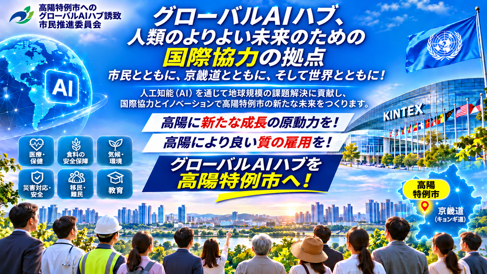

国際機関、各国政府、研究機関、 大学、企業、市民社会を結び、 世界共通の課題解決を目指します。
高陽特例市を、 人工知能と国際協力を通じて 持続可能な発展と人々の幸福に貢献する 国際協力の拠点へと発展させることを目指します。
構想段階にあるグローバルAIハブは、 国際機関が持つ専門知識と 人工知能技術の発展を結びつける 国際協力プラットフォームを目指しています。
公衆衛生、食料安全保障、 気候変動、環境保全、 人道支援、移住、雇用、 教育、防災など、 複雑な地球規模の課題に対して、 AIをどのように活用できるかを探ります。
国際機関、各国政府、 大学、研究機関、企業、 市民社会の間で 知識の共有と協力を促進することを目指します。
国や機関の枠を越えた 政策対話、知識交流、 国際協力を促進します。
公共の利益に資する 責任あるAIの活用を探り、 研究と技術革新を促進します。
AIの実証事業、 技術評価、 科学的根拠に基づく 課題解決の可能性を検討します。
専門人材の育成、 国際交流、研修、 知識共有の機会を探ります。
高陽特例市は、 大韓民国京畿道に位置する 首都圏の主要都市の一つです。
国際展示・コンベンション施設、 医療機関、都市インフラ、 教育・文化資源、 豊かな自然環境などを備えており、 国際協力拠点の形成を検討するための 基盤を有しています。
高陽特例市は首都圏に位置し、 韓国の主要な経済、 研究、公共機関のネットワークへの アクセスが可能です。
KINTEXは、 国際展示会、会議、 専門家交流などに対応する 施設を備えています。
これらの施設は、 将来の国際会議やフォーラム、 協力事業を支える基盤となり得ます。
高陽特例市には、 韓国国立がんセンターをはじめとする 医療機関があります。
こうした資源を活用し、 公衆衛生、医学研究、 責任あるAI活用などの分野で 協力の可能性を検討できます。
長項湿地をはじめとする 生態環境資源は、 環境教育、研究、 持続可能性に関する 協力の可能性を提供します。
高陽特例市には、 住宅、医療サービス、 教育施設、文化施設、 都市インフラなどがあります。
国際機関の職員とその家族に 必要な具体的な生活条件については、 関係機関との協議を通じた 検討が必要です。
国際協力の拡大は、 研究開発、専門職雇用、 企業活動、関連サービス産業などに 新たな機会をもたらす可能性があります。
実際の成果は、 将来の協力事業の規模や 実施形態によって異なります。
高陽特例市が持つ都市資源を生かし、 国際協力と地域発展の双方に貢献する グローバルAIハブの可能性を探ります。
グローバルAIハブ構想では、 9つの国際機関の専門分野に着目し、 AIを活用した国際協力の可能性を 検討しています。
世界保健機関
公衆衛生、疾病予防、 保健医療システム、 健康情報分析における AI活用の可能性。
国連世界食糧計画
食料安全保障、 人道支援、サプライチェーンの強靱化、 食料危機分析へのAI活用。
国連環境計画
気候変動、環境保全、 生物多様性、 環境モニタリングへの AI活用の可能性。
国連難民高等弁務官事務所
難民保護、強制移動、 人道支援、 保護活動に関連する 責任あるデータ分析。
国際移住機関
国際移住、避難民支援、 人道支援、 移住関連サービスの改善に向けた デジタル技術の活用。
国際労働機関
雇用、労働者の権利、 技能開発、 AIが将来の労働市場に与える 影響の分析。
国際電気通信連合
デジタル接続、 電気通信インフラ、 緊急通信、 災害早期警報技術。
国連児童基金
子どもの保護、 教育、デジタル包摂、 子どもの権利を守る 責任あるAI活用。
国連開発計画
持続可能な開発、 危機対応、組織能力の強化、 開発計画における AI活用の可能性。
上記の国際機関は、 それぞれの設立目的や専門分野に基づき、 将来的な協力の可能性を 検討する対象として紹介しています。
これらの機関が グローバルAIハブへの参加、 移転、事務所設置などに 同意したことを意味するものではありません。
将来の協力には、 関係機関との協議、 正式な意思決定、 必要な合意手続きが求められます。
グローバルAIハブ構想では、 国際機関と協力機関の実際のニーズを考慮し、 3段階の発展戦略を提案しています。
参加機関や協力機関が 高陽特例市に安定して 活動拠点を設けられるよう、 必要な条件を検討します。
事務施設、交通、住宅、 医療、教育、 生活サービスなどが 検討対象となります。
公共機関、大学、 研究機関、企業、 市民社会の協力を促進します。
共同研究、国際会議、 AI実証事業、 専門人材交流などの 可能性を検討します。
参加する国際機関の使命達成に 貢献するとともに、 高陽特例市の研究開発、 雇用、企業活動、 地域経済の発展につながる 長期的な協力を目指します。
具体的な施設、資金、 制度的支援、 協力事業の内容については、 関係機関との協議と 正式な承認手続きが必要です。
「グローバルAIハブ高陽特例市誘致 市民推進委員会」は、 グローバルAIハブ構想に関する 市民の理解と参加を促進する 市民主体の組織です。
委員会は、 国際協力とAI技術革新がもたらす 可能性について社会的な議論を促し、 市民の関心と参加を広げることを 目指しています。
主な活動には、 情報発信、市民参加の促進、 政策に関する議論、 関連機関との交流などがあります。
透明性と責任を重視し、 建設的な市民参加を通じて、 国際協力と高陽特例市の 持続可能な発展に貢献します。
グローバルAIハブ構想では、 責任あるAI、 国際協力、 持続可能な開発に関心を持つ 機関や組織との対話を 促進することを目指しています。
想定される協力分野は次のとおりです。
国際協力、 AIガバナンス、 公共の利益に資する技術革新について 意見や経験を共有します。
学際的な共同研究、 知識交流、 研究ネットワーク形成の 可能性を探ります。
責任あるAIの実証事業や 実践的な技術活用の 可能性を検討します。
研修、ワークショップ、 国際フォーラム、 能力開発事業などを 検討します。
関係機関による正式な確認がない限り、 これらはすべて構想・検討段階の 協力可能性を示すものです。
国際機関、研究機関、 その他関心をお持ちの皆様に、 グローバルAIハブ構想と 市民推進委員会の活動について ご理解いただければ幸いです。
詳しい情報は、 本ウェブサイトの日本語ページを ご覧ください。
韓国語の公式ホームページでは、 関連する韓国語資料や 各種サービスをご利用いただけます。
ウェブサイト利用ガイド 韓国語ホームページグローバルAIハブ高陽特例市誘致 市民推進委員会
本ウェブサイトは、 市民主体の構想と活動を紹介するものです。 政府による正式な立地決定や、 国際機関による参加の確約を 意味するものではありません。
グローバルAIハブ構想、 高陽特例市、 国際協力、 市民参加について、 以下の日本語ページから 詳しい情報をご覧いただけます。
グローバルAIハブ構想のウェブサイトでは、 世界各国の訪問者、 国際機関、研究機関、 企業、市民の皆様に向けて、 10言語のホームページを提供しています。
ページ上部の言語選択メニューから、 ご希望の言語に切り替えることができます。
韓国語版では、 韓国語による各種情報や 関連サービスもご利用いただけます。
言語によって、 個別ページやサービスの 提供範囲が異なる場合があります。